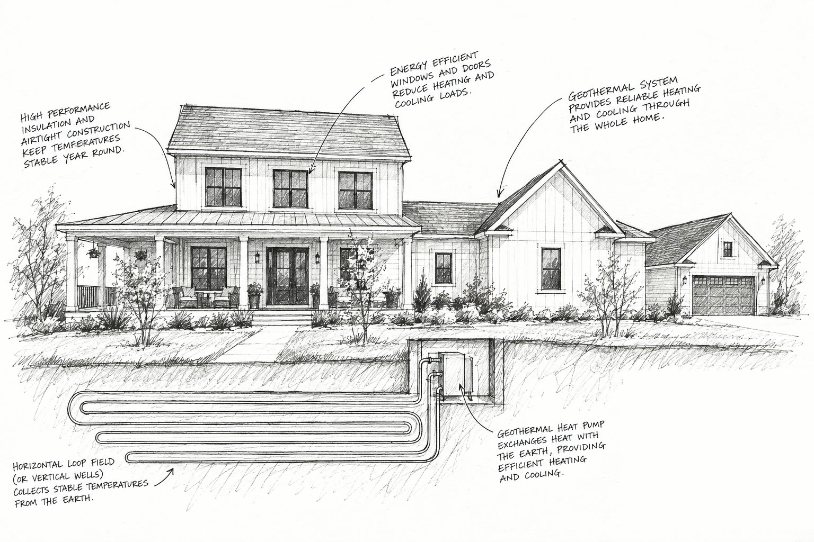
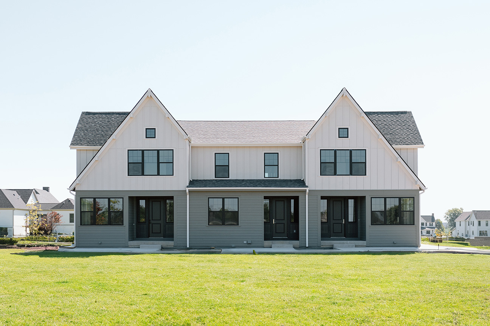

Live & Build · Geothermal
Comfort from the ground up
Much of Middlebrook heats and cools with geothermal energy, drawn from the steady temperature of the earth beneath the neighborhood. It is quiet, comfortable, and out of sight.
Rooted in the land, like everything here
Middlebrook is built around food grown close to home, and its heating and cooling comes from close to home, too. A few hundred feet down, the ground holds a steady temperature all year. Geothermal systems tap that renewable source for warmth in winter and cooling in summer, in a climate known for both.
“Geothermal is quiet, efficient, and avoids unsightly outdoor condenser units, which also helps with aesthetics and community feel.”Diligent Development
Where you’ll find it
- The Homestead TownhomesEvery townhome
- The CottagesEvery cottage
- Town CenterMain Street buildings
- The Middlebrook LoftsEvery apartment
- New single-family homesAn option for every new build
How it works
Heating mode
Fluid circulating through the earth loop absorbs stored heat from the ground and carries it indoors. The geothermal heat pump compresses that heat to a higher temperature and distributes it throughout the home.
Cooling mode
Heat from the home is released into the cooler earth through buried pipes. The cooled fluid returns to the heat pump to complete the cycle. Because the fluid is typically cooler than the outside air, it makes for a more efficient way to air condition.
At Middlebrook, the loops run through vertical wells about 300 feet deep, drilled before the homes are built.


What you won’t notice
No condenser in the side yard. The equipment lives indoors and underground, so porches and lawns face the street without a metal box beside them.
No hum outside the window. A geothermal heat pump runs quieter than a conversation.
No hot and cold rooms. Air moves evenly through the house, with built-in humidification for Iowa winters.
The system can also help heat your water, and it often outlasts conventional heating and cooling equipment.
Quieter and cleaner, by comparison
Relative sound ratings, from the Geothermal at Middlebrook brochure.
Estimated CO2 for a building with a 39,000 Btu/hr design heat loss at −3°F. Source: 2013 Phoenix Energy Supply. Putting geothermal in a typical home is equal in greenhouse gas reduction to planting an acre of trees or taking two cars off the road (Geothermal Heat Pump Consortium).
Wells in the ground before the home goes up
Orca Energy, a geothermal utility provider, covers the upfront cost of drilling the wells and recovers it through utility billing, which makes geothermal accessible to more homeowners. Ground Breaker Homes, Diligent Development, and Orca Energy are proud to bring this first-of-its-kind community to central Iowa.
Geothermal at Middlebrook (PDF) The Enertech USA article (PDF)Questions about geothermal?
Kalen Ludwig · 515.402.3169
kalen@peoplescompany.com
Keaton Dreher · 515.650.1276
keaton@peoplescompany.com

Curious about a geothermal home?
Tell us what you are looking for and we will reach out with the next step, from a tour of a geothermal home to building your own.
Request Info